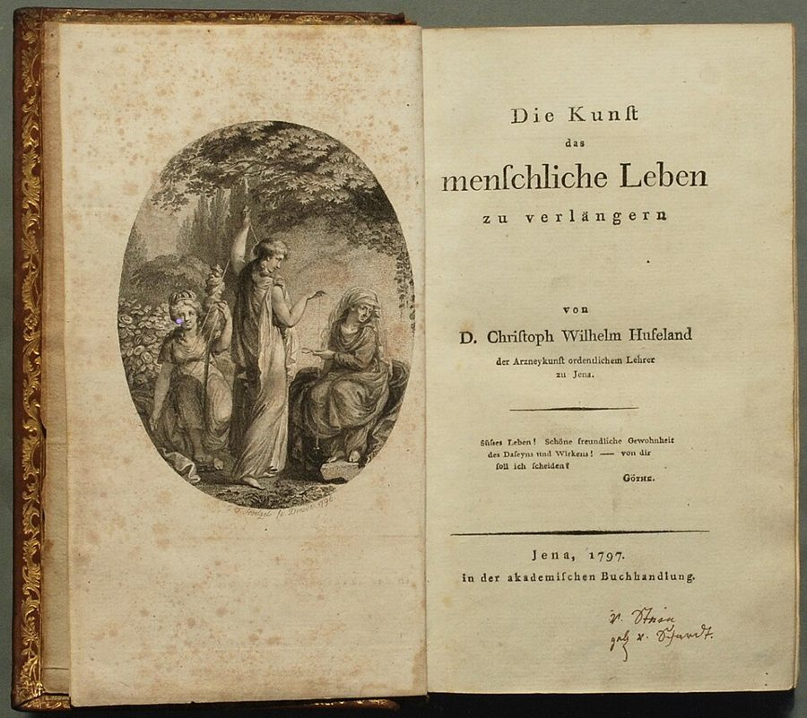
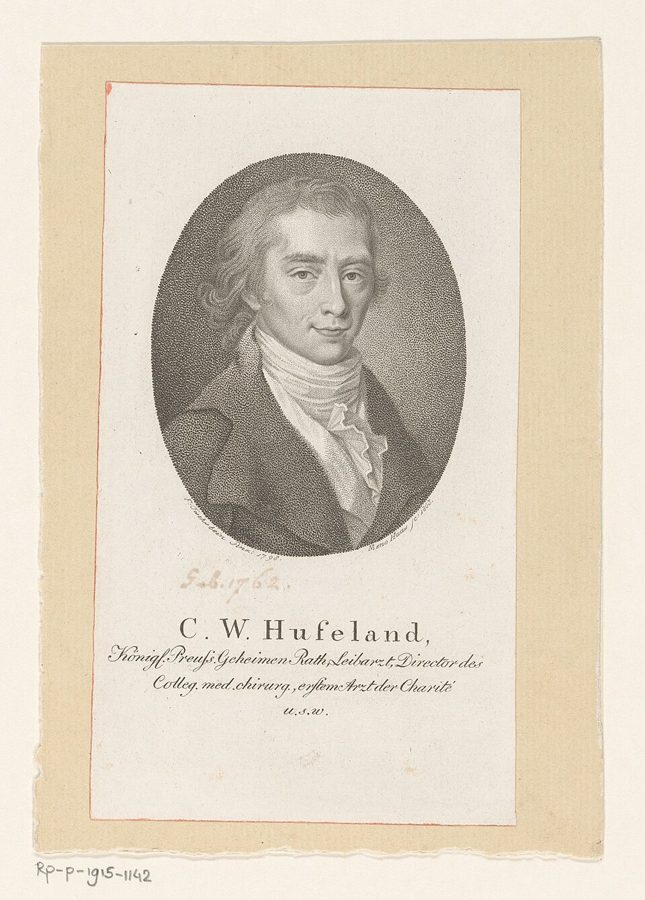
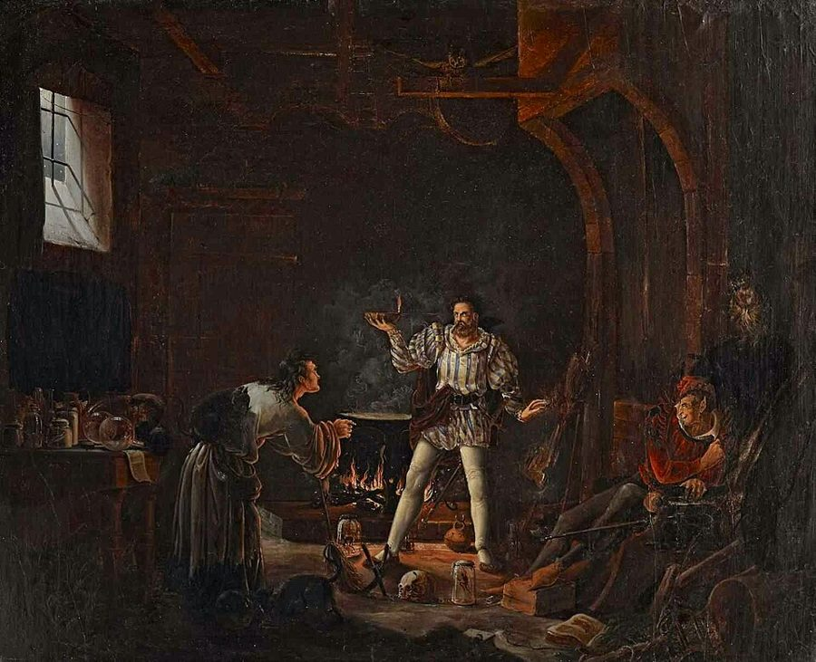
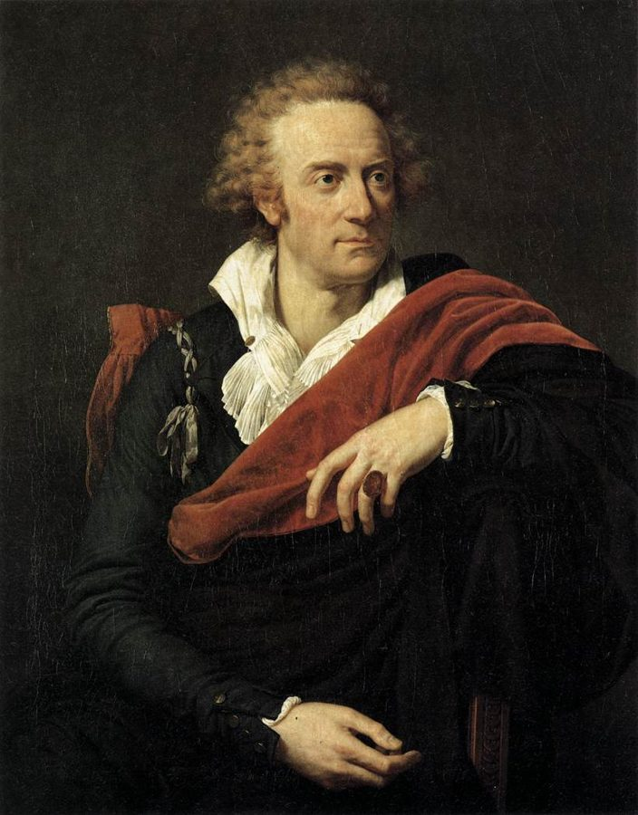
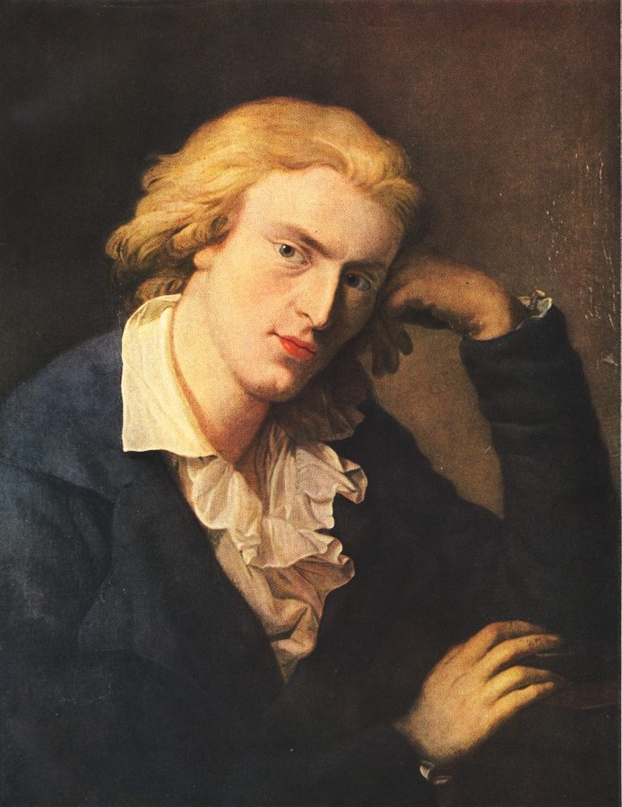

这一页在做什么
这一页三节，都在歌德身边，看希波克拉底那句箴言被一次次引用、改写。先是歌德的医生胡弗兰写了一本教人延年益寿的书，书名就是从箴言里拆出两个词拼成的；再回到年轻的歌德和他写了一辈子的《浮士德》：助手瓦格纳和魔鬼梅菲斯特各引一次箴言，浮士德喝下女巫的药返老还童，把赌注押在一个「瞬间」上；最后是阿尔菲耶里和席勒，箴言里的「技艺」换成了天才的艺术。读的时候抓住：箴言每改一次，时间的问题就换了一种问法。

胡弗兰这本书的初版，书名页印着《延长人寿的技艺》（Die Kunst das menschliche Leben zu verlängern）和「耶拿，1797」。书名下面的题词就是第 62 段说的那句歌德，署名 Göthe。左页的版画画的是命运女神。H.-P.，CC BY-SA 2.0 de，维基共享资源 读之前：这一页在全书的哪里
上一页停在歌德从罗马回到魏玛。这一页接着待在魏玛，看第 1 章说的那两条出路怎样落地：§3 是医生正经地教人延长生命，§4 浮士德在人生中点干脆跳出这场赛跑，又靠女巫的药返老还童，§5 走到了两条路之外。第 70 段让你回看「第 2 章第 1 节」，说的就是上一页的人生之弓 ；第 106 段回指本页的 §3。第 4 章第 1 节说浮士德在「第 3 章第 4 节」，其实就是这一页。
生命短、技艺长，这道落差除了延长生命、缩短技艺，还能怎么对付？要是不再按长短来算时间，又该怎么算？
读的时候带着这几个问题。不用先找答案，读完回来对照「检查一下理解」。
胡弗兰把箴言里的哪两个词拼成了一个书名？这一拼，箴言里原来的对立去哪儿了？§3
人到中年的浮士德和留在书斋里的瓦格纳，面对同一句箴言，各自怎么选？§4
赌约押的那个「瞬间」，为什么作者说它已经不能按长短来算？§4
席勒把「短 / 长」换成了什么？歌德又偷偷改了哪一个字？§5
这一页的路线
§3 很短，像一段插曲：歌德刚回魏玛，作者顺手介绍他身边的医生。第 63 段突然把时间倒回二十年前，回到在斯特拉斯堡旁听医学课的年轻歌德，从那里进入《浮士德》。§4 最长，两处花饰分隔：第 75 段起转到在罗马写的女巫厨房，第 91 段起是赌约和瞬间。第 90 段让女巫厨房绕回 §3 的胡弗兰，前后扣上。§5 换到 1789 年的巴黎，第 102 段再回魏玛，落在席勒的一行诗和歌德改的一个字上。觉得「怎么又跳回去了」，是因为作者按箴言被改写的先后走，不按年代走。
§3 第 56–62 段
§4 第 63–94 段
§5 第 95–107 段
胡弗兰的书 长＋生命＝一个词
学医的歌德 希波克拉底方法
瓦格纳 半路就得死
梅菲斯特 时间短，技艺长
女巫厨房 年轻三十岁
赌约 不计长短的瞬间
阿尔菲耶里 崇高艺术对暴政
席勒和歌德 严肃对明朗
第 90 段：预先的广告
本站示意图。上面一行是人和作品，下面的小字是箴言在那里变成了什么。蓝点是胡弗兰和学医的歌德，橙点是《浮士德》，第三种颜色是 §5；竖的虚线是节的分界，弯的虚线是第 90 段把女巫厨房接回胡弗兰。 作者落在哪： 浮士德在人生的中点不再和技艺赛跑，把赌注押在一个按质不按量的瞬间上；席勒干脆把艺术挪到时间之外，用「严肃 / 明朗」换掉「短 / 长」。歌德改了一个字，作者不判谁对，只开玩笑说明朗的艺术也许真能当长寿药。
分节地图
这一页是原书第 2 章的第 3–5 节。粗体是这一节的主角；斜体是英文这一节开头的几个词，在电子书里搜它就能跳到那里；节里的转折用段号点出来。读完打个勾。
歌德的医生胡弗兰和他的长寿书约 1100 词 We have now returned with Goethe … 书名的来历在第 58 段；第 62 段的「明朗」，§5 还会用到。 《浮士德》：瓦格纳、女巫厨房和赌约约 2000 词 We now go back, for the … 第 75 段起转到罗马写的女巫厨房，第 91 段起是赌约和瞬间。 阿尔菲耶里的十四行诗，席勒的序幕约 1200 词 At the beginning of 1789, the … 第 102 段起回到魏玛；第 107 段的一字之改是本页的收尾。
先用中文过一遍：这一页的概念
作者常常一笔带过、默认你懂的概念，这里先从书外讲一遍：它从哪来，是什么意思。它在这一页起什么作用，看每块最后一句。讲过的概念都汇总在概念汇总 。
§3 长寿术 Makrobiotik（macrobiotics） 希腊文 makros 是「长」，bios 是「生命」，古希腊就有 makrobios（长寿的）这个词。德国医生胡弗兰拿它给一门学问起名：怎样靠饮食、起居、心境把命活长。他的理论建在「生命力」上：每个人带着一份有限的生命力，过日子就在消耗它，人体也能再生补回一些；放慢、节制、睡足，就耗得慢。可以想成一块电量有限的电池，用得越猛耗得越快。他 1796 年写成这本书，1797 年在耶拿印出，起初书名只叫《延长人寿的技艺》，1805 年那一版起才以 Makrobiotik 为正题。今天说的「长寿饮食法」（macrobiotic diet）是 20 世纪的日本人借这个词另起的一套，和胡弗兰不是一回事。
在这一页： 第 58 段讲书名怎样从箴言里拆字拼成，第 60 段讲生命力的消耗和再生；第 90 段，女巫厨房被作者说成这本书的「广告」。
§3 明朗 heiter / Heiterkeit（serene） 德文 heiter 本来说天气：晴朗、无云，heitere Luft 是晴朗的空气；用在人身上，是开朗而平静的心境。它不是哈哈大笑的「开心」，也不是轻浮，更接近拉丁文 serenus：天上没有云，心里没有乱。到了魏玛古典主义，Heiterkeit 成了一种理想：艺术把沉重的东西化成从容、清明的形式。英文 serene 留住了「平静」，丢了「开朗」；cheerful 正好反过来，所以读到 serene 时，心里要把两层都放上。Weinrich 自己写过一本《明朗的文学小史》（Kleine Literaturgeschichte der Heiterkeit，2001），书里注 16 提到了它。
在这一页： 第 62 段，胡弗兰把它当成最利于长寿的心境；第 104–107 段，席勒那行诗和歌德改的那个字，都落在 heiter 上。
§4 瞬间 Augenblick（Verweile doch!） 德文 Augenblick 由 Auge（眼睛）和 Blick（一瞥）组成，字面是「眼睛一瞥那么久」。在歌德的《浮士德》里，它成了赌约的关键：浮士德跟魔鬼说，哪天他对某个瞬间说出「停一停吧！你多么美！」，他就认输。这一刻的分量不在长短，而在饱满：一瞬间装进了一生的经验。后来的哲学家（克尔凯郭尔、海德格尔）都把「瞬间」当成要紧的概念。它和计量的、一分一秒流走的时间是两回事，更接近希腊人说的时机 （kairos），第 4 章会细讲两者怎样接上。
在这一页： 第 91–94 段，赌约押在瞬间上；作者说这是「质的时间」，希波克拉底按长短的算法对浮士德不再作数。
书里的人和作品
按在书里出现的顺序排，标题前是节号。作品只讲到读懂这一节需要的程度。
§3 胡弗兰：歌德的医生，写长寿书的人胡弗兰在宫廷城市魏玛长大，在耶拿和哥廷根读医，回魏玛行医，歌德、赫尔德、席勒都看过他的病。后来他去了柏林，做普鲁士国王的御医和 Charité 医院的主任医师。他把希波克拉底奉为「先人」。作者用他来说明第 1 章那两条出路里的第一条：医生出手，延长太短的生命。书里说他的书 1797 年出版；尾注 32 又说 1796 年。其实两个都有来历：序言写于 1796 年 7 月，书名页印的是 1797 年。第 60 段的培根那本书，书里写 1637 年，初版其实是 1623 年。

胡弗兰的版画像。下面的题字列着他在柏林的头衔：普鲁士王室枢密顾问、御医、Charité 首席医生。Rijksmuseum，公有领域，维基共享资源
胡弗兰 Christoph Wilhelm Hufeland，1762–1836 德国医生，《长寿术》的作者。第 56–62 段的主角，第 90、106 段又被提起。
利希滕贝格 Georg Christoph Lichtenberg，1742–1799 哥廷根的物理学家，也是有名的格言作家。书里说他是胡弗兰的博士导师。
培根 Francis Bacon，1561–1626 英国哲学家。胡弗兰从他的《生与死的历史》（Historia vitae et mortis）里取了「生命力」这个概念。
§4 《浮士德》：从草稿到第二部歌德写《浮士德》前后六十年。二十多岁时的草稿后来叫《原浮士德》（Urfaust），他带到魏玛宫廷朗读过；1790 年先印了一个《浮士德·片段》，第一部 1808 年出版，第二部 1831 年才封稿。故事讲学者浮士德学遍各科仍一无所知，和魔鬼梅菲斯特打赌、立约：魔鬼伺候他过一种新生活，只要他满足地对某个瞬间说「停一停」，灵魂就归魔鬼。第一部的主线是他和少女格蕾琴的悲剧。作者从剧里挑了两句引箴言的台词、女巫厨房和赌约，拿来看浮士德怎样对付时间剪。
瓦格纳 Wagner（剧中人物） 浮士德的助手（Famulus），勤勤恳恳的书呆子。第 64–71 段，他引箴言叹人生短。
梅菲斯特 Mephistopheles（剧中人物） 魔鬼，「几千岁了」，却扮成年轻学生、贵公子。第 77–90 段，他第二次引箴言，又把浮士德领进女巫厨房。
格蕾琴 Gretchen / Margarete（剧中人物） 十四岁的少女，浮士德返老还童后追求她，故事以她的悲剧收场。书里注 32 的译者注说英译多用 Gretchen 这个名字。
§4 女巫的厨房：在罗马写的一场「女巫的厨房」一场，歌德在意大利旅行时写成，是他在罗马给《浮士德》添的唯一一场。浮士德在这里喝下返老还童的药水，然后才去追格蕾琴。作者问：为什么在意大利的阳光下写一场这么阴森的日耳曼女巫戏？他的回答是，歌德把意大利之行当成一场返老还童的疗程，就让他的主人公也年轻一回。书里尾注 32 补了一笔：这几行 1790 年就印出来了，胡弗兰的书晚了好几年，所以只能算「预先的」广告；不过胡弗兰 1785 年就开始写这本书，歌德和他很熟。

19 世纪一位无名画家画的「浮士德返老还童」：中间举着火碗的是浮士德，左边是女巫，右边懒洋洋看着的是梅菲斯特。anonymous，公有领域，维基共享资源 §4 浮士德几岁作者在 §4 里一直在算年龄，读的时候容易乱。《原浮士德》里，浮士德三十五岁上下，正好是诗篇算出的人生中点；歌德拖了几十年才写下去，主人公也跟着老了，托马斯·曼说第一部里的浮士德「约六十岁」；女巫的药让他年轻整整三十岁，回到三十；第二部结尾，歌德对爱克曼说浮士德正好一百岁。作者算这笔账，是为了落到剧末：返老还童换来的年岁用完，浮士德活到整整一百岁；剧末至少暗示，这段寿命不算太短，够他经历那「最高的瞬间」。
0
30
35
60
100 岁
女巫厨房：减去三十岁
返老还童以后的七十年
原浮士德：约 35 岁
第一部（1808）：约 60 岁
喝下药：30 岁
第二部结尾：100 岁
本站示意图。年龄照书里第 70、76、80、90、94 段：约 60 岁是托马斯·曼的说法，100 岁出自歌德和爱克曼的谈话（书里注 34）。蓝点是还没喝药的浮士德，橙点和橙线是喝药以后的浮士德。 §5 阿尔菲耶里：在巴黎写十四行诗的悲剧作家阿尔菲耶里出身皮埃蒙特的伯爵家庭，是 18 世纪意大利最重要的悲剧作家，剧本多写暴君和反抗暴君的人。书里说他 1789 年初带着自己的悲剧到巴黎出版，这首十四行诗是他 2 月到巴黎后不久写的，收进他的诗集《诗韵集》（Rime）。作者拿它来看箴言的一次变形：开头一句仿希波克拉底，可后半首骂的是暴政。第 101 段说他「多半没料到」自由的日子来得这样快：不到五个月，1789 年 7 月 14 日，巴黎人攻下了巴士底狱。

阿尔菲耶里像，法国画家 François-Xavier Fabre 1793 年画。François-Xavier Fabre，公有领域，维基共享资源
阿尔菲耶里 Vittorio Alfieri，1749–1803 意大利悲剧作家，写过两部布鲁图斯剧和散文《论暴政》。第 95–101 段的主角。
§5 席勒和《华伦斯坦》的序幕席勒（Friedrich Schiller）年轻时学医，当过军医，所以第 105 段叫他「医生席勒」。1790 年代他写了一批美学论文，其中最出名的是《审美教育书简》，第 103 段的「时代之子」就出自那里。《华伦斯坦》是写三十年战争的三部曲；1798 年 10 月 12 日魏玛剧院翻修后重新开张，演的是第一部《华伦斯坦的军营》，前面加了一段序幕。序幕最后一行，席勒写的是「生活是严肃的，艺术是明朗的」，歌德当剧院总监，演出时擅自改成「艺术应当明朗」。

席勒像，Anton Graff 画，1786 年起笔，几年后完成。Anton Graff，公有领域，维基共享资源 图里的引文
下面这几段在你的电子书里是图片，长按查不了词，也搜不到。每块先说它在屏幕上的位置，再逐行给中文意思；行首的斜体是图里这一行开头的几个词，用来和图对上。古人的诗本站据原作的语言译，不从英译转译。
§4 第 65–66 段 · 歌德《原浮士德》，瓦格纳的话（《浮士德》第一部「夜」一场里也保留了）· 英译和德文在第 64 段末尾（…citing Hippocrates' first aphorism:）之后。前一张是英译，书里注 25 说《原浮士德》的引文是译者 Rendall 自己译的；后一张是德文。
Ach Gott die … 天哪！技艺是长的，Und kurz ist … 而我们的生命是短的！
德文两行是交叉的次序：技艺—长，短—生命，技艺放在前面，和拉丁文 Ars longa, vita brevis 一样。英译的 Dear me 比德文 Ach Gott（天哪）口气轻。
Ach Gott
第 1 行
（德文）天哪
字面是「啊，上帝」，日常的感叹。瓦格纳叹的是自己。
§4 第 68–69 段 · 歌德《原浮士德》，瓦格纳接着说 · 英译和德文在第 67 段末尾（…problem, as he continues:）之后。前一张英译，后一张德文。据书里注 25 的行号，这两行和上一块之间隔了四行。
Und eh man … 人还没走到半路，Muß wohl ein … 一个可怜虫恐怕就得死了。
英译的「埋进土里」是加的，德文只说 sterben（死）；德文的 wohl 是「恐怕、多半」，英译没译出来。
den halben Weg
第 1 行
（德文）一半的路
第 70 段作者就抓住这几个字，读成人生的中点。
ein armer Teufel
第 2 行
（德文）可怜虫
字面是「一个可怜的魔鬼」，德文英文都用它说倒霉的普通人，和魔鬼无关。放在一部魔鬼戏里，读来有点双关。
§4 第 78–79 段 · 歌德《浮士德》第一部「书斋」，梅菲斯特对浮士德说 · 英译和德文在第 77 段末尾（…in a conversation with Faust:）之后。前一张是 Walter Arndt 的英译，后一张德文。
Doch nur vor … 只有一件事让我担心：Die Zeit ist … 时间短，技艺长。Ich dächt’, ihr … 我想，您会肯听人指点吧。
梅菲斯特把箴言里的「生命」换成了「时间」（Zeit），英译照样保留。图里的 is mir bang 是印刷错字，歌德原文是 ist mir bang。在剧里这话带着嘲弄：浮士德说要尝遍全人类的苦乐，魔鬼就拿箴言提醒他，一辈子哪够用。
mir ist bang
第 1 行
（德文）我担心、我发怵
bang 是害怕、不安，和英文 bang 无关。
ihr ließet euch belehren
第 3 行
（德文）您会听人指点
ihr 在这里是旧式的敬称「您」，不是「你们」。lassen + sich + 动词：让自己被……。
§4 第 81–82 段 · 歌德《浮士德》第一部「女巫的厨房」，浮士德问梅菲斯特 · 英译和德文在第 80 段末尾（…at precisely thirty years:）之后。前一张英译，后一张德文。
Und schafft die … 这锅乱七八糟的煮弄，Wohl dreißig Jahre … 真能从我身上去掉三十年？
英译把「年」（Jahre）写成「冬天」（winters），absurd（荒唐的）也是英译加的。
Sudelköcherei
第 1 行
（德文）胡乱熬煮的东西
Sudel 是脏、乱，Köcherei 是煮，合起来是轻蔑的说法，英译作 swill-cookery（泔水烹调）。
vom Leibe schaffen
第 2 行
（德文）从身上弄走、摆脱
把三十年像包袱一样从身上卸掉。
§4 第 84–85 段 · 歌德《浮士德》第一部「女巫的厨房」，梅菲斯特回答 · 英译和德文在第 83 段末尾（…Mephistopheles replies:）之后。前一张英译，后一张德文。
Mein Freund, nun … 我的朋友，你这话又说得聪明了！Dich zu verjüngen … 要让你变年轻，也有一个自然的办法。
英译第 1 行改成带刺的「又是那个万事通」；第 2 行的「更合适」（apter）是英译加的比较，德文只说「也有」。
verjüngen
第 2 行
（德文）使变年轻
jung（年轻）加前缀 ver-，名词是 Verjüngung，第 75 段说的返老还童疗程就是它。
§4 第 87–89 段 · 歌德《浮士德》第一部「女巫的厨房」，梅菲斯特说的「自然的办法」· 英译和德文在第 86 段末尾（…method of rejuvenation is recommended:）之后。前两张是英译，第三张是德文。
Begib dich gleich … 马上到田里去，Fang’ an zu … 动手锄地、挖土，Erhalte dich und … 把你自己和你的心思In einem ganz … 守在一个很窄的圈子里，Ernähre dich mit … 吃不掺杂的饭食……
英译把「马上」（gleich）写成「今天」，「心情」（mood）是加的，「最窄的」是英译加重的说法，德文只是「很有限的」。剧里梅菲斯特接着还劝他和牲口一起过日子；浮士德回答说他不惯、也放不下身段去拿铁锹，于是还得靠女巫。
beschränkten Kreise
第 4 行
（德文）有限的圈子
不出远门、不贪多，正和胡弗兰的节制之道对得上，第 90 段说的「广告」就在这里。
ungemischter Speise
第 5 行
（德文）不掺杂的饭食
简单、清淡、不混着吃。第 59 段胡弗兰也劝人节制饮食、最好吃素。
§4 第 92–93 段 · 歌德《浮士德》第一部「书斋」，浮士德立下赌约 · 英译和德文在第 91 段末尾（…other times in a man's life:）之后。前一张英译，后一张德文。
Und Schlag auf … 一言为定，击掌为凭！（梅菲斯特刚说完「成交」，这是浮士德的回答。）Werd’ ich zum … 如果我对那个瞬间说：Verweile doch! du … 「停一停吧！你多么美！」Dann magst du … 那你就可以给我套上镣铐，Dann will ich … 那我就甘心毁灭！Dann mag die … 那就让丧钟敲响，Dann bist du … 你的差事就此了结，Die Uhr mag … 钟可以停，指针可以落下，Es sei die … 我的时间就此终了！
英译第 2 行的「飞逝的」（swift）是加的；第 4 行说把镣铐「锁在脚上」，德文只说套上镣铐。图里的 Totenglocken 是复数，歌德原文是单数 Totenglocke（丧钟）。
Schlag auf Schlag
第 1 行
（德文）一掌接一掌
今天的德文里是「接二连三、紧接着」；在这里一般读作击掌立约，回应梅菲斯特的「成交」。
Werd’ ich zum Augenblick sagen
第 2 行
（德文）倘若我对瞬间说
动词提到句首，等于省掉了 wenn（如果），是条件句。见概念块「瞬间」。
Verweile doch!
第 3 行
（德文）停一停吧！
verweilen 是逗留，doch 加在命令式里是恳求的口气。这是全剧最有名的一句。
zu Grunde gehen
第 5 行
（德文）毁灭、完蛋
今天写作 zugrunde gehen，字面是「沉到底」。
Es sei die Zeit für mich vorbei
第 9 行
（德文）让我的时间就此结束
sei 是祈愿的形式：不说「时间结束了」，而说「但愿 / 就让它结束」。第 107 段歌德把席勒的 ist 改成 sei，用的是同一个形式（这是本站顺手指出的，书里没有这样对照）。
§5 第 97–100 段 · 阿尔菲耶里的十四行诗，1789 年 2 月到巴黎后不久写的 · 英译和意大利文在第 96 段末尾（…the following sonnet:）之后。前两张是英译，后两张是意大利文。两边分图的地方不一样：英译第一张只有 6 行，意大利文第一张有 7 行，下面按意大利文逐行。
Lunga è arte … 崇高的艺术长，人生短，Ardua l’impresa; e … 事业艰难；高明的创作者也Ostacol sempre al … 总在他美好的大胆上碰到阻碍：Ecco perché lo … 所以卓越的文风才会欠缺。E qual più … 谁在灵泉边喝得越多，Quanto ei potria … 越能给自己的腰身装上翅膀，Tanto vie meno … 对这样一个人就越不容易：Lo scriver forte, … 写得有力、真实、坦率。Ahi tirannia, che … 唉，暴政，你这邪恶的东西叫世界悲伤！Che tutto guasti, … 你败坏一切，扭曲本性，扼杀一切；E più si … 天越黑，你越光彩；De’ soffocati ingegni … 你傲然嘲笑那些被闷死的才智；Ma, verrà il … 可是总有一天，哭声也会掺进A’ rei trionfi … 你愚蠢地倚仗的那些罪恶的凯旋。
英译第 2 行把「高明的创作者」（l’alto artefice，说的是人）译成了「高的艺术」；第 9 行丢了 empia（邪恶的、不敬神的）；第 12 行把形容暴政的 altera（傲然地）挪到了被闷死的人身上（lofty spirits）；最后一行丢了 rei（罪恶的），凯旋也从复数变成单数。通行本第 1 行作 Lunga è l’arte sublime，图里少了 l’。
alto artefice
第 2 行
（意大利文）高明的创作者
artefice 来自拉丁文 artifex（匠人、艺术家），本来带着「手艺」的意思。第 101 段作者说这里的艺术已不是要苦学的 technē，这个词正好留着旧义的影子。
Ippocrene
第 5 行
（意大利文）希波克林泉
希腊赫利孔山上缪斯的泉水，传说是飞马珀伽索斯的蹄子踏出来的。喝它的泉水就是得到诗的灵感；下一行的「翅膀」也接着飞马的意象。两个名字开头都是希腊文 hippos（马）：Hippocrene 是「马泉」，此外和希波克拉底没有关系。
empia
第 2 行
（意大利文）邪恶的、不敬神的
阴性单数，形容暴政（tirannia）。英译没有译出。
si abbuja
第 4 行
（意大利文）天变暗
今天写作 si abbuia。暴政越黑暗，自己越显得光彩。
altera ridi
第 5 行
（意大利文）你傲然地笑
altera 是阴性单数，说的是暴政高傲，不是被闷死的才智（ingegni 是阳性复数）。
rei trionfi
第 7 行
（意大利文）罪恶的凯旋
reo 是有罪的，复数 rei；A’ 是 ai 的省写，「向……、掺到……里」。
词与短语
你用 Kindle，单个生词长按就能查，这里只收词典帮不上的：每个词都认识、合起来不懂的说法，学术腔，没翻译的外文，典故。斜体小字是原句里连续的几个词，错字照电子书原样，搜它就能跳到那里。图里的词在上面「图里的引文」里。
§3 歌德的医生胡弗兰和他的长寿书
Weimar classicism
… fits very well into Weimar classicism.
魏玛古典主义
文学史的说法，一般指歌德从意大利回来到席勒去世（1805）前后，两人在魏玛追求的那种讲究节制、和谐的风格。§5 的席勒就是它的另一位主角。
no less a figure than
… was no less a figure than the …
竟然是……这样的大人物
字面「不少于」，实际是强调来头大，不是比较。
Makrobiotik oder Die Kunst, das menschliche Leben zu verlängern
… Life (Mahrobiotih oder Die Kunst, das …
（德文书名）《长寿术，或延长人寿的技艺》
电子书里 k 都成了 h（Mahrobiotih），后面的 verlangern 丢了变音。见概念块「长寿术」：这个正题是 1805 年那一版才有的。
still in conflict in Hippocrates
… which are still in conflict in Hippocrates, …
在希波克拉底那里还互相对立
still 是「当时还」：在箴言里，bios 配「短」、makros 配技艺，两个词各在一边；到胡弗兰才把它们合成一个词。不是「至今仍」。
long-livedness (Langlebigkeit)
I refer to long-livedness (Langlebigkeit), which …
（德文）长寿
英译生造了 long-livedness 来贴德文的构词（lang 长 + leben 活）。后面的 Longavitat 是拉丁来源的同义词 Longävität，电子书丢了变音。
out of step with
… is out of step with more recent …
跟不上、不合
本义是走路和队伍不齐步。作者说的是 much of（不少内容）过时了，不是全书。
not a few of
… and not a few of his practical …
相当多的
「不少」用否定说肯定，意思是「为数不少」，不是「没几条」。
occupatio
… (this is Seneca's oft-lamented occupatio) in …
（拉丁文）忙碌、被事务占满
塞涅卡在《论生命之短暂》里一再抱怨的毛病，见第 1 章的
闲暇 。作者把胡弗兰「别在职业里操劳过度」的劝告接回塞涅卡。
favorable prognosis
This favorable prognosis can be justified …
这个乐观的预后
prognosis 是医生的行话「预后」：估计病会怎样发展。作者用医生的口气说「照做准能长寿」，带点打趣。
the obedient reader
… he advises the obedient reader not …
听话的读者
调侃：照着书一条条做的读者。下文劝这位听话的读者别把酒全戒了。
congenial dietetics
… which he sums up his congenial dietetics:
合人心意的养生之道
dietetics 不只是饮食，来自希腊文 diaita（生活方式），古代医学里指整套起居调养。congenial 是「宜人、合脾气」，作者说这套养生不苛刻。
consign without further ado
… to consign without further ado Hufeland's …
不假思索地把……归进
consign to 是打发到某处（常带贬义，如 consign to the dustbin）；without further ado 是「不多啰嗦、二话不说」。作者说别把这本书简单当成保健读物。
Historia vitae et mortis
… essayist Francis Bacon, Historia vitae et …
（拉丁文书名）《生与死的历史》
培根研究延年益寿的书。书里括号写 1637 年；初版是 1623 年，英译本 1638 年。
life force
… he takes in particular the concept …
生命力
德文 Lebenskraft。18 世纪很多医生相信活物身上有一种化学和物理解释不了的力，这种看法叫生机论（vitalism）。下一段作者说现代医学不需要它。
did not itself become a long-lived theory
… did not itself become a long-lived theory.
这个理论本身也没「长寿」
文字游戏：教人长寿的理论，自己的寿命却很短。
gets along very well without
Modern medicine gets along very well without …
没有……也过得好好的
get along without 是「用不着」，不是「相处」。
in heiterer Luft
… (in heiterer Lu ft, lit.
（德文）在晴朗的空气里
电子书把 Luft 断成了 Lu ft。heiter 本义说天气晴朗，英译跟着括号直译成 serene air。见概念块「明朗」。
Süßes Leben! Schöne freundliche Gewohnheit des Daseins und Wirkens!
SuL es Leben! Schone freundliche Gewohnheit des …
（德文）甜美的生命！存在和作为的美好亲切的习惯！
电子书识别乱了：SuL es 是 Süßes，and 是 und，Boll 是 soll。这句出自歌德的剧本《埃格蒙特》第五幕，埃格蒙特在狱中得知没有救了，向生命告别。胡弗兰拿一个将死之人的话当长寿书的题词（见本页开头的书名页）。
§4 《浮士德》：瓦格纳、女巫厨房和赌约
Sesenheim poems
… and wrote his Sesenheim poems.
塞森海姆诗
歌德在斯特拉斯堡读书时，爱上附近村子塞森海姆的牧师女儿 Friederike Brion，为她写的一组情诗，是德国抒情诗的名篇。
interdisciplinary (as we now say)
… these interdisciplinary (as we now say) studies …
（用今天的话说）跨学科的
括号是作者提醒：这是拿今天的词套在 18 世纪。歌德学的是法律，却去听医学课。
Poetry and Truth (Dichtung and Wahrheit)
… his autobiography, Poetry and Truth (Dichtung …
（书名）《诗与真》
歌德的自传。德文书名里的 and 应为 und，书里各处德文的 und 多被识别成了 and。
the fine Hippocratic method
… he also mentions with respect …
美好的希波克拉底方法
歌德说的是斯特拉斯堡医学课的路子。第 1 章第 26 段作者自己也宣布要用「希波克拉底的方法」（见
01a ），这里是同一个说法。
initiation into the mysteries of medicine
… initiation into the mysteries of medicine …
踏进医学的门
initiation 和 mysteries 都来自古代宗教的秘仪：入会仪式、只传给入会者的奥秘。作者用这个夸张的比喻说歌德开始接触医学。
he does not say, unfortunately
(in this case, he does not say, …
（对医学）他没说「可惜」
典出浮士德的开场白：「哲学、法学、医学，可惜还有神学，我都下苦功学透了。」「可惜」只加在神学上。作者借此说浮士德对医学没有怨言。
adopts his tone and echoes him
… adopts his tone and echoes him, …
学着他的口气附和他
echo 作动词是「重复别人的话、附和」，不是回声。
intertextual allusion
… read like an intertextual allusion to …
互文的暗指
文学研究的术语：一部作品暗中呼应另一部。这里说瓦格纳的「半路」呼应但丁《神曲》第一行「在人生旅程的中途」，见
人生之弓 。
dry pedant (trockenen Schwärmer)
(trockenen Schwarmer) to see that he
干巴巴的书呆子
德文 Schwärmer 本是耽于幻想、狂热的人，trocken 是干巴巴，合起来是个反着拼的骂人话；英译取了「书呆子」的意思。在剧里这是浮士德听见瓦格纳敲门、嫌他打扰时骂瓦格纳的话。这一句里被警告、要抓紧后半辈子的是浮士德，读的时候别被这个称呼带偏。
De brevitate vitae
… as a small treatise De brevitate vitae.
（拉丁文书名）《论生命之短暂》
塞涅卡的名篇，第 1 章第 2 节讲过（见
01b ）。作者说瓦格纳这两行就是一篇微型的《论生命之短暂》。
is not inclined to be put off
… is not inclined to be put off …
不会因此打退堂鼓
put off 在这里是「劝退、使泄气」，不是「推迟」。
be, or seem to be
… and ultimately be, or seem to be, …
真是，或者看上去是
作者的挖苦：瓦格纳最后成了「世上最博学的人」，至少看上去是。
draws up a balance sheet
… he draws up a balance sheet …
算一笔总账
balance sheet 是会计的资产负债表。作者故意用记账的词：人到中年盘点一生，正是这本书讲的「时间经济」。
go native
… discards his whole scholarly baggage, in order …
入乡随俗，抛开原来的身份
殖民时代的英语，本指欧洲人丢掉本国的规矩、照当地人那样过活。这里说浮士德扔下书本，去过有血有肉的日子。紧接着的 go native 前面漏了 to，原文就这样。
this is constitutive for
… and this is constitutive for the …
这是……的根本所在
学术腔，对应德文的 konstitutiv：构成某物、少了它就不成其为它。作者说「在人生中点跳出时间剪」撑起了整部《浮士德》。
a short-circuited art of living
… of a short-circuited art of living …
走捷径的生活艺术
short-circuit 是电路短路：电流不走正路，直接接通。浮士德不再走漫长的学问之路，借魔鬼的法术直接去要生活。前面一句的 breaks out of this threateningly asymmetrical time-shear 见
时间剪 ；书里注 28 让读者参看布鲁门贝格讲浮士德「跳出」（Ausscheren）的地方，并说布鲁门贝格本人没用这个词。
in other registers
… requires continuation in other registers.
换个调子接着写
register 本是管风琴的音栓、音域，引申为风格、层面。作者说格蕾琴的故事对浮士德只是一段插曲，要在第二部用完全不同的写法继续。
a genuine fountain of youth
… as a genuine fountain of youth.
真正的青春之泉
中世纪以来的传说：喝了或泡了这泉水就能变年轻。作者把歌德的意大利之行比作它。
Teutonic
… this very Teutonic witches' scene?
十足日耳曼味的
Teutonic 本指古代的条顿人，现在多带点打趣，说某样东西「德国味太重」。和意大利的阳光对照。
jeunesse doree
… clearly belongs to the jeunesse doree.
（法文）纨绔子弟、富家公子哥
字面「镀金的青年」，原指法国大革命恐怖时期过后那批时髦的有钱年轻人。电子书丢了重音，原文是 jeunesse dorée。
dealing in lifetime values
Regarding this dealing in lifetime values, …
拿寿命做的买卖
deal in 是「经营、买卖某种货」。魔鬼几千岁，却扮成二十岁的学生：作者说这一场本身就是一笔寿命的生意。
a regular advertisement
… a regular advertisement (more precisely, an …
不折不扣的广告
regular 在口语里是「十足的、地道的」（a regular hero），不是「定期的」。括号里改口「预先的广告」，因为这几行比胡弗兰的书早几年印出（书里注 32）。
a young rake
… stirrings of a young rake, so …
年轻的浪荡子
rake 在这里是 rakehell 的简写，指放荡的花花公子，不是耙子。
a qualitative time (Greek kairos)
… a qualitative time (Greek kairos) that …
质的时间（希腊文 kairos）
全书第一次点出 kairos 这个名字，第 4 章第 1 节才细讲，见
时机 。书里注 34 也指到那里。
for the non-duration of an instant
… for the non-duration of an instant?
在一个没有长度的刹那里
non-duration 是作者的说法：瞬间不占时长。这一句是问句：浮士德是不是输了赌约，却在那一刹那真的体验过圆满？作者没有回答。
§5 阿尔菲耶里的十四行诗，席勒的序幕
in tyrannos
… like many of this author's other plays, …
（拉丁文）反暴君
字面「冲着暴君」，在这句末尾的引号里，说这些剧是写来反对暴君的。
Della tirannide
… prose work On Tyranny (Della tirannide, …
（意大利文书名）《论暴政》
阿尔菲耶里的政论，1777 年写起，1789 年才印出。
ecrivain engage avant la lettre
… as an ecrivain engage avant la lettre, …
（法文）在「介入作家」这个说法出现以前的介入作家
écrivain engagé 是 20 世纪中叶萨特那一代流行的词，指用写作介入政治的作家；avant la lettre 字面「在字母之前」，指某样东西在有名字之前就已经存在。
what good is all that
But what good is all that, …
这一切又有什么用
反问，意思是「全都白搭」：灵感再多，写不出高的风格也没用。
the two tercets
… as the two tercets make clear-a …
两个三行诗节
意大利式十四行诗分成前八行和后六行，后六行又分成两个三行节。这首诗的转折就在第 9 行：从诗人的难处转到骂暴政。
complete it in an imperial mode
… to complete it in an imperial mode.
用帝制的方式「完成」革命
反话：拿破仑结束了革命，自己称帝（1804）。作者说阿尔菲耶里和席勒都没想到自由会变成这样。
an idealist, atemporal idea of art
… by an idealist, atemporal idea of art.
唯心论的、超时间的艺术观
idealist 是哲学上的唯心论（理念高于现实），不是「理想主义者」。atemporal 是不受时间约束。这正是
技艺 的反面：technē 要花时间学，天才的艺术与时间无关。
blank verse
… transformed into Schillerian blank verse.
素体诗
不押韵的五步抑扬格，莎士比亚的剧大多用它，《华伦斯坦》的这段序幕和后两部也是（第一部《军营》用的是另一种押韵的诗体）。不是「空白的诗」。
The physician Schiller is correcting his ancestor
The physician Schiller is correcting his …
医生席勒在纠正他的祖师爷
席勒学过医、当过军医。ancestor 回扣第 57 段胡弗兰也把希波克拉底称作 ancestor。
hemistiches
… consists of two hemistiches whose strict …
半行
一行诗在中间停顿处分成的两半。「生活是严肃的」是前半行，「艺术是明朗的」是后半行。
temporal-quantitative / modal-qualitative predicates
… with the modal-qualitative predicates …
表时间和量的谓词 / 表样态和质的谓词
语法学的说法。「短、长」回答「有多久」，「严肃、明朗」回答「是什么样子」。作者是语言学家，换的是谓词的种类。
serenity can take its time
… serenity can take its time.
明朗可以不慌不忙
take one's time 是「慢慢来」，在这里一语双关：明朗本来就从容，又正好配得上艺术的「长」。
the royal road to
… praised as the royal road to longevity …
通往……的康庄大道
传说欧几里得对国王说「学几何没有王者之路」（没有捷径）。今天的 royal road 指最好、最直接的路。
the subjunctive (or more precisely, optative)
… the subjunctive (or more precisely, optative) …
虚拟式（更准确地说，祈愿式）
这一页最要紧的一个字。ist 是直陈式：「艺术是明朗的」，陈述一个事实。sei 是祈愿式：「艺术应当明朗」，表达一个愿望或要求，像「愿你平安」的「愿」。席勒说明朗是艺术本来就有的，歌德说明朗是要努力去争取的。作者接着问：明朗是艺术理想中的品质，还是实际的品质？
the two princely Weimar poets
Which of the two princely Weimar poets …
魏玛这两位诗坛王侯
princely 不是「王子的」，是「王侯般尊贵的」。德文里常把歌德、席勒称作 Dichterfürsten（诗国王侯）。
is not for the present writer to judge
… is not for the present writer to judge.
轮不到笔者来评判
the present writer 是学术文章里作者自称「笔者」。作者明说不判谁对。
an elixir of longevity
… wishes it to be an elixir of longevity, …
长寿灵药
收尾的玩笑：只要够想要艺术明朗，它就会真成长寿药。这句话本身就用了「愿望」的口气，扣回 sei；又扣回女巫的药水和胡弗兰。
读不通的扫描错字：
… beyond the temporal horizon.2$ 末尾的 2$ 是注号 28。… published in i8o8, we must 应为 1808。(Dunker), he is not much older 应为 Junker（年轻贵族）。… Schiller wrote in the 179os.36 应为 1790s，36 是注号。
读完：作者到底说了什么
读完这一页的几节再看。下面是作者在这几节里的论点，由本站按论点重新组织，不按原书的顺序；每条右上角是依据所在的段落，拿不准就回书里那几段再读一遍。
胡弗兰把箴言里对立的两个词，合成了一门延长生命的学问 bios 取自箴言前半，makros 取自后半，在希波克拉底那里还对立，到胡弗兰合成「长寿」。作者认为书里不少内容已不合新医学，但很多见解和建议仍值得听，照做必定能延寿；只是生命力理论本身没有「长寿」。
§3 第 58、59、61 段 浮士德在人生中点跳出了时间剪，这撑起了整部戏 瓦格纳引箴言、提「半路」，作者读作一道提醒：后半生要抓紧。瓦格纳照旧苦学，浮士德却盘点一生，扔下学问，借魔鬼走一条「短路」的生活艺术，不再和技艺赛跑。
§4 第 70、72、73 段 返老还童是延长生命那条路，在剧里写成了女巫的药 作者说歌德把意大利之行当成返老还童，也让主人公年轻一回。梅菲斯特先推荐种地、节食的自然办法，作者称之为胡弗兰的「预先的广告」；浮士德做不到，只能喝药，回到三十岁。
§4 第 75、80、90 段 赌约押的瞬间是质的时间，不再按长短算 作者说瞬间是 kairos 那种时间：极短，却压进一生的经验。人能不能留住它、浮士德输没输，歌德不给明确答案；结尾至少暗示，一百岁对体验那「最高的瞬间」不算太短。
§4 第 94 段 新的艺术不再计长短，箴言跟着变了 阿尔菲耶里的「长」是天授的崇高艺术，挡路的是暴政；席勒的天才艺术在时间之外，于是用「严肃 / 明朗」换掉「短 / 长」。歌德把 ist 改成 sei，谁对作者不判。
§5 第 101、103、105、107 段
合起来： 同一句箴言，在医生手里是一张延寿处方，在浮士德那里是要跳出的赛跑，在席勒那里干脆失去了意义。第 1 章那两条出路之外，这几节露出了另一种回应：换掉衡量时间的尺子，瞬间按质算，艺术不计长短。
值得停下来的句子
the professor breaks out of this threateningly asymmetrical time-shear and abandons the hopeless race between life and art or science— §4 第 73 段。本站译：这位教授跳出了这把不对称得叫人心惊的时间剪，放弃了生命与技艺（或学问）之间那场没有希望的赛跑。
前半句的 breaks out of 和后半句的 abandons 是同一个动作的两种说法。asymmetrical（不对称的）回扣第 1 章：生命短、技艺长，剪刀两刃本来就不等长；threateningly（令人不安地、带着威胁地）说这道落差逼人。art or science 的 or 是「或者说」：浮士德的技艺就是他的学问。这句话前面还有一个插入语 and this is constitutive for the whole Faust drama：作者的判断落在这里。
The shortness or length of time according to the Hippocratic calculation no longer counts for Faust.— §4 第 94 段。本站译：按希波克拉底的算法来的时间长短，对浮士德已经不作数了。
主语很长（The shortness or length of time according to the Hippocratic calculation），谓语只有三个词 no longer counts。count 在这里是「算数、要紧」，同时又让人想到「计数」：不再按长短计，也就不再「作数」。这句是 §4 的转折，后面整段都在讲另一种时间。
检查一下理解
先在心里答，再点开。答错的那题，回书里把对应那一节再读一遍。
1.（§3）作者为什么说胡弗兰的书名是从希波克拉底的箴言里来的？ 他从箴言前半取了 bios（生命），从后半取了 makros（长），拼成一个词。这两个词在箴言里分属对立的两边，在胡弗兰这里和解成「长寿」。
2.（§3）胡弗兰认为长寿最要紧的帮手是什么？这一点后面在哪里又出现了？ 明朗（heiter）的天性。§5 第 106 段作者说，席勒的「艺术是明朗的」前一年，胡弗兰的书刚把明朗夸成通往长寿的大道。
3.（§4）瓦格纳说「还没走到半路」，作者从这句话里读出了什么？ 它暗合但丁的「人生中途」和诗篇算出的三十五岁，是对浮士德的一道冒失的提醒：后半辈子要抓紧用。《原浮士德》里的浮士德恰好在这个年纪。
4.（§4）作者为什么说女巫厨房那几行是胡弗兰书的广告，又为什么要改口说「预先的」广告？ 梅菲斯特推荐的种地、节食、守在小圈子里的自然办法，正像胡弗兰的养生之道。可这几行 1790 年已经印出，胡弗兰的书晚了好几年，所以只能算预先的。
5.（§4）浮士德的赌约到底输了没有？ 作者说歌德没有给明确的是或否。他只问能不能留住那个瞬间，并指出结尾至少暗示：活到一百岁，对体验「最高的瞬间」不算太短。
6.（§5）阿尔菲耶里的十四行诗开头像希波克拉底，作者说它在哪里偏离了？ 诗里长的「艺术」不是要苦学的 technē，而是从灵感得来的崇高艺术；挡住诗人的也不再是生命短，而是暴政。
7.（§5）歌德把 ist 改成 sei，意思差在哪？作者怎么评？ ist 说艺术就是明朗的，sei 说艺术应当明朗，从事实变成愿望。这背后是明朗算艺术的理想品质还是实际品质的分歧。作者说谁对不由他来判，只开玩笑说够想要，它也许真成了长寿药。
用一句话说这一页，写给一个没读过的人。
想一想：面对一门总也学不完的东西，你更像瓦格纳（照旧一天天啃下去），还是人到中年的浮士德（掉头换一种活法）？如果你曾有过「这一刻抵得上很多日子」的时候，那是你挤时间挤出来的，还是碰上的？
精彩回顾
读过又忘了，从这里想起来。挑的是这一页最值得记住的人、说法和比喻，不按原书顺序；每条后面是节号，想细看就回书里那一节。全书各页的这一节都收在全书回顾 。
一句话： 在歌德身边，「生命短，技艺长」先成了胡弗兰的长寿书名，又让浮士德在人生中点跳出赛跑、把赌注押在一个瞬间上，最后被席勒改成「生活严肃，艺术明朗」。
拆字拼出的书名 胡弗兰从箴言前半取「生命」，后半取「长」，拼成 Makrobiotik，长寿术。作者说他的书至今值得一读，生命力理论本身却没长寿。
§3 预先的广告 梅菲斯特劝浮士德去种地、吃简单的饭、守在小圈子里，作者说这是胡弗兰长寿书的广告；这几行印出时，那本书还没出版。
§4 六十减三十 浮士德约六十岁，女巫的药让他年轻整整三十岁；第二部结尾，他正好一百岁。歌德自己从意大利回来，也觉得年轻了一回。
§4 停一停吧，你多么美 浮士德和魔鬼赌：哪天他对一个瞬间这样说，就认输。作者说这个瞬间是质的时间，不再按长短来算。
§4 一个字的分歧 席勒写「生活是严肃的，艺术是明朗的」；歌德演出时把「是」改成「应当是」。作者不判谁对，只说够想要，明朗的艺术也许真成了长寿药。
§5